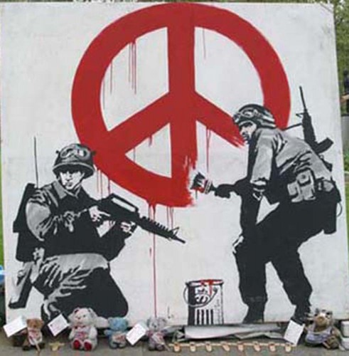

Street Art
Le Street Art !
L'art urbain, ou « street art », est un mouvement artistique contemporain. Il regroupe toutes les formes d’art réalisées dans la rue, ou dans des endroits publics, et englobe diverses techniques telles que le graffiti, la réclame, le pochoir, la mosaïque, les stickers, l'affichage voire le yarn bombing ou les installations. C'est principalement un art éphémère vu par un très grand public.
La généalogie de l'art urbain est multiple et complexe. Il existe depuis les années 1960 une prise en compte de l'environnement urbain dans la création contemporaine. Allan Kaprow, un des premiers artistes à utiliser les installations, écrit que : « l'art s'est déplacé de l'objet spécialisé en galerie vers l'environnement urbain réel. » En France, les années 1960 voient également des expérimentations d'intégration de l'art dans la ville. L'une des premières expériences est l'organisation d'un symposium international de sculpture, en 1968 à Grenoble, qui impulse la création de dizaines d'œuvres dans la ville, dont celles de Mizui, Vasarely, Calder… En 1972, à Villeneuve de Grenoble, des plasticiens sont contactés pour participer à la conception du volume de la galerie de l'Arlequin. Des contacts sont pris avec Jean Dewasne mais la tentative tourne court. La décoration est finalement confiée à Henri Ciriani et Borja Huidobro. Une fresque est réalisée sur la nouvelle bourse du travail par Ernest Pignon-Ernest, considéré comme l'un des précurseurs de l'art urbain. D'autres expériences sont imaginées dans les villes nouvelles, comme à Évry, en 1972, et à Marne-la-Vallée. L'art urbain puise ses origines dans des disciplines graphiques aussi variées que la bande dessinée ou l'affiche. Selon Alain Weill, spécialiste mondial de l'affiche (à ne pas confondre avec l'homme d'affaires du secteur des médias…), l'essence de l'art urbain contemporain se retrouve tant dans les œuvres des affichistes d'après-guerre comme Raymond Savignac, en France, que dans celles des dessinateurs de la contre-culture américaine tels Robert Crumb ou Vaughn Bodé, tous deux figures de proue du comics underground depuis les années 1960.
BANKSY
Banksy est le pseudonyme d'un artiste connu pour son art urbain et également comme peintre et réalisateur. Dissimulant sa véritable identité, des spéculations sont faites, fondées sur des images prises par des caméras de vidéosurveillance ; il serait originaire des environs de Stoke au Royaume-Uni, serait né en 1974 et se nommerait Robert Banks, ou encore Robin Gunningham. Étant jeune il a fait partie d'un groupe de graffeurs, le Bristol's DryBreadZ Crew (DBZ). Il aurait été influencé par la scène underground de Bristol et par ses relations entre artistes et musiciens, cette ville ayant donné naissance au mouvement trip hop. C'est à cet endroit que Banksy réalisa ses premières œuvres. Aujourd'hui on peut trouver certaines de celles-ci en galerie, plusieurs ont été vendues.

Rémi Tellier
Source : Wikipédia
Shepard Fairey
Frank Shepard Fairey (né le 15 février 1970 à Charleston en Caroline du Sud) est un artiste américain, sérigraphe, fresquiste et illustrateur. Issu de la scène du skateboard, il s'est d'abord fait connaître par les autocollants André the Giant Has a Posse, qui a donné la campagne Obey Giant. Son travail est devenu mondialement célèbre lors de la campagne présidentielle américaine de 2008, avec la création du poster HOPE de Barack Obama qui deviendra une image-icône de la campagne. L'Institut d'art contemporain de Boston le considère comme un des plus connus, des meilleurs et des plus influents artistes de Street art du moment. En France, Shepard Fairey est d'abord exposé à "La base", la galerie éphémère d'Invader où il présente de petits portraits de guérilleros coagulés et plusieurs fois à la Galerie Magda Danysz qui a défendu très tôt son travail en galerie. Il participe au M.U.R. en mai 2007 lors d'une pièce avec WK interact. Une de ses recompositions d'affiches a été exposée à la Fondation Cartier lors de l'exposition Né dans la rue - Graffiti, à l'automne 2009.
Guillaume Reynard
Source : Wikipédia
Thoma Vuille : M.CHAT
Thoma1 Vuille est un peintre franco-suisse, né à Boudry dans le canton de Neuchâtel le 16 juillet 1977. Il est le créateur de la série graphique des M. CHAT, personnage félin souriant créé dans les rues d'Orléans dans une démarche alliant optimisme et culture de proximité.
Parcours
Thoma Vuille commence la peinture de rue à l'acrylique à 15 ans, en mémoire de son grand-père, peintre en bâtiment. Après un bac professionnel en génie civil, il est élève à l'Institut d'arts visuels d'Orléans de 1995 à 2001. Il se fait connaître comme auteur de la série M. CHAT, créations graphiques représentant un chat jaune orangé arborant un large sourire, généralement réalisé à la peinture acrylique sur des murs. L'idée lui vient en 1997 au cours d'un atelier dans une école orléanaise durant lequel une petite fille réalise un dessin de chat qui inspire l'artiste. Celui-ci entreprend alors de peindre son chat sur les murs de la ville d'Orléans, de préférence au niveau des toits, avec pour seul objectif de « mettre de l’humain et de l’amour dans la ville : Orléans était une ville plutôt grise et on avait besoin d’un peu de soleil partout. » Il entend ainsi véhiculer l'optimisme de cet animal au large sourire. Il signe ses œuvres d'un mystérieux « M. CHAT », pour « savoir si un dessin peut vivre sans créateur. » Il laisse ainsi croire que derrière ces graffitis se cache un collectif d'artistes. Thoma Vuille entame alors une carrière internationale. Il peint son M. CHAT à Tours, Nantes, Saint-Étienne, Paris, Londres, Vienne, Genève et New-York, puis le désormais célèbre chat apparaît en 2004 sur l'esplanade du Centre Pompidou pour le téléfilm Chats perchés de Chris Marker, en 2005 sur le tramway de Sarajevo, en 2006 dans une manifestation new-yorkaise. Le 18 mars 2007, Thoma Vuille est pris en flagrant délit par la police municipale alors qu'il décore un mur d'Orléans. Il est ainsi contraint de révéler l'identité du créateur de M. CHAT, mais la justice ne prononce à son encontre qu'une peine symbolique de 300 euros d'amende avec sursis. Il abandonne alors son statut de graffeur underground pour travailler en partenariat avec des institutions, comme la ville d'Orléans ou le Conseil régional de Poitou-Charentes. Cette évolution est parfois décriée car elle est interprétée comme un renoncement à une démarche critique et comme une marchandisation du concept de M. CHAT, ce dont l'artiste se défend en avançant que son art atteint sa maturité et qu'après dix ans au RMI, il aspire à vivre de son travail. Il garde d'ailleurs une attitude permissive avec le milieu urbain, comme le montre son usage d'un vélo public. À la question « Quelles sont vos obsessions et comment nourrissent-elles votre travail ? », il répond « Le rapport à l’autorité et la transgression qui en découle. »
Œuvre
Le travail de Thoma Vuille consiste en une déclinaison constante de la figure de M. CHAT, dont le trait s'est assuré au fil des ans. Le dessin est simple, la ligne claire : le chat jaune et souriant fait au premier abord l'effet d'un logo. Toutefois, il ne saurait être ainsi réduit : « Le chat ne se décline pas en logotype, mais furtivement nous captive ». Issu du street art, il déploie sa « silhouette cartoonesque » dans de multiples positions, de face ou de profil, avec ou sans ailes, seul ou accompagné. M. CHAT possède une forte identité, mais qui « supporte les variations ». Sa simplicité même lui permet d'atteindre une dimension symbolique. Le sourire de M. CHAT, déjà présent sur le dessin de la petite fille qui l'a inspiré, constitue un élément d'explication à l'attrait exercé par l'œuvre de Thoma Vuille et contribue à en faire, selon Nora Monnet, « une manifestation de bienveillance à destination universelle, une proposition poétique ouverte sur le monde. » Il évoque le « grinning cat » de Lewis Caroll par son caractère énigmatique et fascinant. En s'émancipant de la peinture de rue, l'art de Thoma Vuille a pris une autre dimension. Ses performances, en s'éloignant de l'univers individualiste du graffiti, visent à contourner les réticences habituelles et à partager l'art au sein d'une culture de proximité.
Thibaud Cattoire